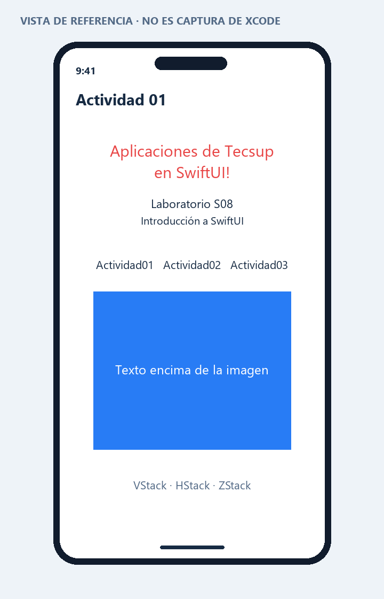

PROGRAMACIÓN EN MÓVILES AVANZADO · S08
01 · Proyecto y stacks
Corresponde a las páginas 2–6 de la guía. Se crea una aplicación y se emplean los tres contenedores básicos.
Crear y configurar el proyecto
- En Xcode: File → New → Project → iOS → App.
- Product Name: Actividad01. Interface: SwiftUI. Language: Swift. No se necesita almacenamiento ni paquetes.
- Guardar en una carpeta propia. En Target → General, revisar nombre visible y destinos iPhone/iPad. El proyecto entregado usa iOS 17 como mínimo; no declara compatibilidad Mac sin verificarla.
- En el archivo de entrada
Actividad01App.swift, mostrar ContentView() dentro de NavigationStack. - Abrir el Canvas y ejecutar con un simulador. En dispositivo físico configurar la firma con tu equipo.
Interfaz construida
| Elemento | Función |
|---|
| VStack | Apila el título, subtítulo, fila, figura y explicación. |
| HStack | Muestra Actividad01, Actividad02 y Actividad03 en una fila. |
| ZStack | Coloca el texto blanco por encima del rectángulo azul. |
| ScrollView | Permite recorrer la pantalla si el contenido no cabe. |
| Modificadores | font cambia tamaño; foregroundStyle cambia color; padding añade espacio; multilineTextAlignment centra el título. |
Comprobación prevista en Xcode
Debe verse el título rojo, las tres etiquetas en una fila y el texto superpuesto al rectángulo. Girar el dispositivo y aumentar el tamaño de texto para revisar que se pueda leer con desplazamiento.
Código y ejecución
Abre Proyecto/Actividad01.xcodeproj en Xcode 15 o posterior, con un simulador iOS 17 o posterior. El código principal está en Proyecto/Actividad01/ContentView.swift. Consulta las instrucciones de ejecución.
La estructura de proyecto está preparada. La compilación y las capturas reales quedan pendientes de ejecutar en una Mac; no se presentan como pruebas realizadas.
Vista de referencia
Representación de la interfaz y los datos de ejemplo. No es una captura del simulador. La vista ejecutable se encuentra en el archivo SwiftUI y en su #Preview.
